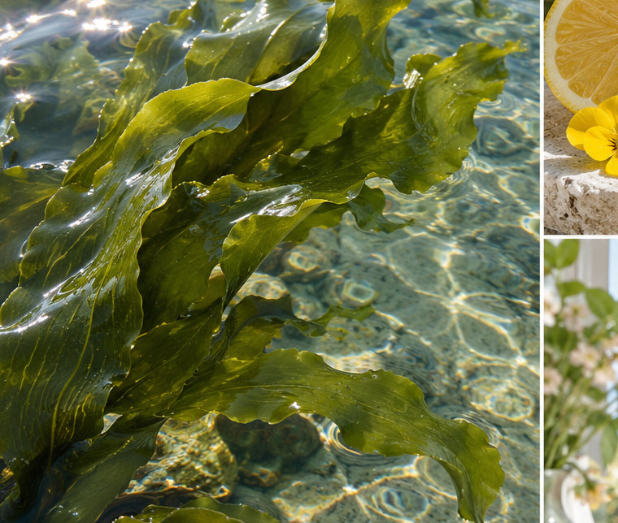
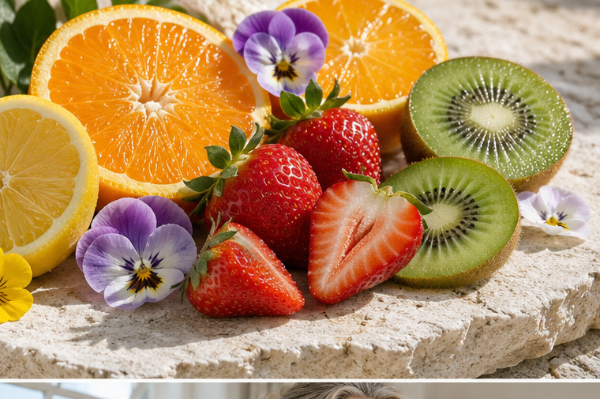

Collagen has spent the last decade in powders, capsules and coffee creamers. Now it's in a jelly. And while the format sounds like a novelty, the science of why it works is genuinely interesting — especially because most people are taking collagen without the two things their body needs to actually use it.
Collagen is a building material, not a supplement
Collagen is the most abundant protein in your body. It's the scaffolding in your skin, the shock absorber in your joints, the structure in your hair and nails. Your body produces it constantly.
Then, starting in your mid-twenties, production begins to decline — gradually at first, then faster. The visible result is what the beauty industry has built an empire on: loss of elasticity, thinner skin, fine lines, drier texture.
You cannot eat collagen and have it go directly to your face. What you can do is supply your body with the raw materials and the cofactors it needs to build its own.


Why "peptides" is the word that matters
Whole collagen is a large, tough protein. Your digestive system breaks it down, but inefficiently. Hydrolyzed collagen peptides are pre-broken into short chains of amino acids, which are absorbed more readily into the bloodstream.
Clinical research on hydrolyzed collagen — including marine sources — has reported improvements in skin hydration, elasticity and the appearance of wrinkles over periods of roughly 8 to 12 weeks of daily use. Marine collagen peptides tend to be low in molecular weight, which is part of why they're popular in beauty-focused formulas. Seaweed-derived collagen adds a marine polysaccharide matrix alongside the peptides.
The honest framing: the evidence is promising and growing, not settled. Effects are modest and build slowly. Nobody gets glass skin in a week, and anyone promising that is selling you something.
The two cofactors most people skip
This is the part that gets left out of the collagen conversation.
Your body needs specific nutrients to synthesise collagen, and two of them are non-negotiable:
Vitamin C is a required cofactor for the enzymes that stabilise collagen's structure. Without adequate vitamin C, collagen synthesis doesn't proceed properly. This is not a soft claim, it's basic biochemistry — it's why scurvy is a collagen disease.
Zinc is involved in collagen synthesis and in the antioxidant defences that protect skin cells from oxidative stress. It also supports normal immune function and skin barrier integrity.
Taking collagen without these is like buying flat-pack furniture and skipping the screws. The components are there; assembly is not.
The gut–skin connection is real
Your skin and your gut talk to each other constantly, through immune signalling and the inflammatory environment your body is operating in. An imbalanced gut microbiome is associated with skin inflammation and reactivity.
Which means prebiotic fiber — the kind that feeds beneficial bacteria and supports short-chain fatty acid production — is arguably part of a skin-support strategy, not just a digestion one. This is why formulas that combine collagen with fermentable fibers are more interesting than collagen alone.
What to expect, realistically
Give it 8 to 12 weeks of daily consistency before judging. Hydration and elasticity changes are gradual and easier to notice in how your skin feels than in a mirror. Take a photo. Drink water. Wear sunscreen, which does more for skin ageing than any supplement on the market.
Our jelly combines marine collagen peptides with vitamin C and zinc — the cofactors, not just the collagen — alongside konjac, inulin and resistant maltodextrin for gut support. It's a collagen you can chew, in a two-minute daily ritual. Explore Gut & Glow